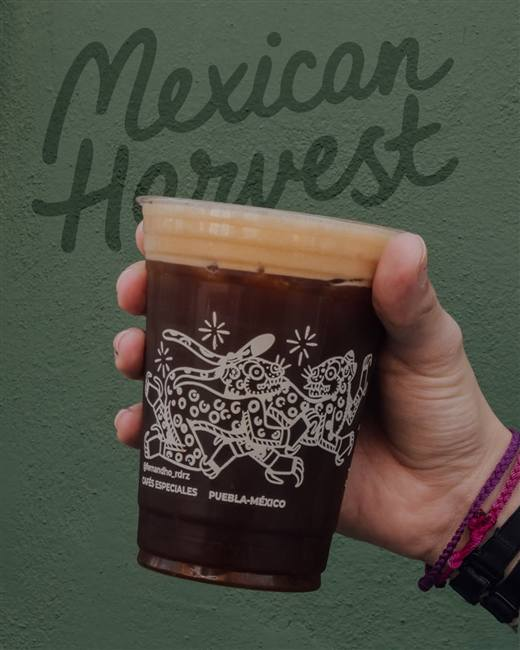
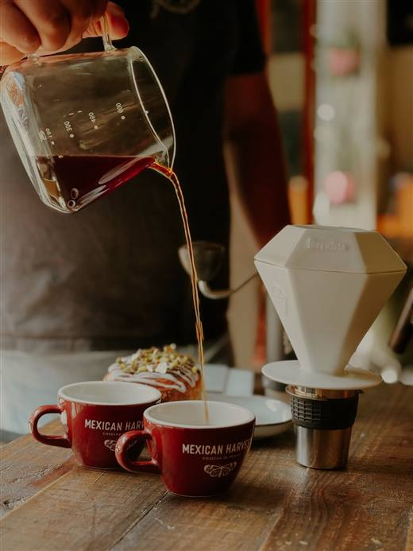
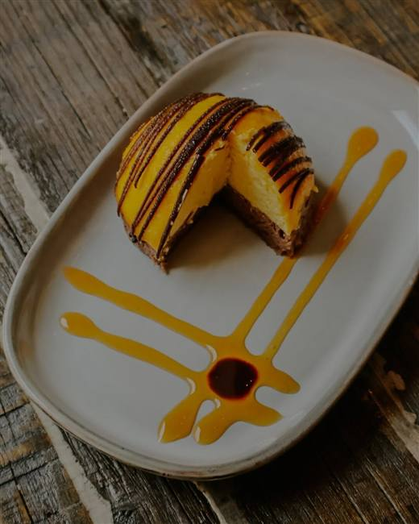

Espresso$42
Doble, 60 ml. Pídelo corto si lo quieres más intenso.
Cosecha de México · Cafés Especiales
La carta de la casa
★ Top 50 · The Best Coffee Shops México 2025Todas las bebidas salen con la cosecha de la semana. Leche de avena, almendra o coco sin costo extra.
Doble, 60 ml. Pídelo corto si lo quieres más intenso.
Espresso con un toque de leche texturizada.
8 oz, espuma fina. Con canela solo si la pides.
Doble espresso, 6 oz de leche a punto de seda.
Va bien con la panadería de la casa.
Nuestro favorito para empezar: espresso, leche y mazapán deshecho.
Cacao de Tabasco molido en piedra, nada de jarabes.
Pregunta qué cosecha está en la tolva del molino esta semana; el barista te recomienda el método.
Taza limpia, acidez brillante. Molido medio-fino y vertido en espiral.
Parecido al V60 pero más dulce; nuestro dripper consentido.
Filtrado grueso, taza elegante.
Inmersión completa, cuerpo denso. Para quien viene del café de olla.
Rápido, dulce y redondo. Ideal si tienes prisa pero no tanta.
Para las tardes frías del Centro Histórico.
Tablilla oaxaqueña batida como debe ser.
Grado ceremonial, batido a mano.
Especias cocidas aquí, sin concentrados.
La cereza del grano que tostamos, con piloncillo. Casi no la tiene nadie.
Mexican Harvest · Carta · 1 de 3
MEXICAN HARVEST
Cosecha de México
Coldbrew en mano y tu día mejora.
Maceración de 18 a 24 horas. Poca acidez, dulzor natural.
Coldbrew con nitrógeno servido en draft. Espumoso, sabor a stout ligera.
Mitad horchata de la casa, mitad coldbrew. Suena raro, funciona.
Tónica, hielo, doble espresso y twist de naranja.
Lunes a domingo de 8:00 a 14:00 en Centro Histórico. Todo sale con pan de nuestra boulangerie.
Totopos hechos aquí, crema, queso fresco y cebolla morada.
Bolillo de la casa, frijoles de la olla, queso gratinado y pico de gallo.
Masa madre, aguacate machacado, rabanito y ajonjolí tostado.
Nuestra concha de vainilla en versión pan francés, con fruta de temporada.
Al gusto, con frijoles y tortillas recién hechas.
Exprimido al momento, 16 oz.
Cocina sencilla y honesta, del mercado a la mesa.
Jamón serrano, manchego, arúgula y aceite de oliva.
Manchego, panela y de cabra, con mermelada de chipotle.
Lo que traiga el mercado esa semana, con vinagreta de miel.
Solo sábados y domingos, horneada al momento con amigos invitados.



Mexican Harvest · Carta · 2 de 3
MEXICAN HARVEST
Cosecha de México
Horneado diario de nuestra boulangerie. Lo que se acaba, se acabó.
Con coulis de mango y trazo de cacao. El de las fotos.
Glaseado apenas dulce, nuez de la región.
Laminado de 48 horas con mantequilla europea.
Solo en octubre y noviembre: pan de muerto y amigos de temporada.
Tueste fechado en cada bolsa. Te lo molemos según tu método o déjalo en grano.
Chocolate, mantequilla, manzana, pera y toronja.
Caramelo, nuez, cítricos dulces. El de todos los días.
Frutos rojos, panela, taza jugosa.
Nuestra mezcla para espresso y moka. Tueste medio, a prueba de leches.
Mexican Harvest · Carta · 3 de 3